To study and understand Simple Harmonic Motion (SHM), strong grasp of following
mathematical concepts are required:
Trigonometry
Along with trigonometric ratios of standard angles, following results
must be remembered:
The angle \(180^\circ\) is same as \(\pi\)
radians. For any angle \(x^\circ\) to convert it in \(\theta\) rad,
\(\qquad\theta=\pi\times\frac{x}{180}\)
Maximum value of \(a\sin(\theta)\) is \(a\).
Maximum value of \(b\cos(\theta)\) is \(b\). But maximum value of
\(a\sin(\theta)+b\cos(\theta)\) is \(\sqrt{a^2+b^2}\)
To convert a \(\sin\) function to \(\cos\)
function we use :
\(\quad\sin(\frac{\pi}{2}-\theta)=\cos(\theta)\)
Effect of addition of following angles in \(\sin\) and \(\cos\)
function:
Consider a body kept in
stable equilibrium, if this body is displaced slightly from its
equilibrium position, it will continue to move back and forth around its equilibrium
position. We will study all such types of motion that repeat themselves in regular
time interval under following categories:
Periodic motionPeriodic motion of a body
is that motion which is repeated exactly after a fixed interval of time.
Mathematically, if a function of time \(f\left(t\right)\) can be expressed
as \(f\left(t+T\right)\)=\(f\left(t\right)\), then the function can be
regarded as periodic with period \(T\). Motion of any particle described by
such periodic function will be a
periodic motion
. Following are a few examples
of periodic motion:
The revolution of earth around the sun is a
periodic motion. Its period of revolution is one year
The motion of hands of a clock is a periodic
motion. The period of motion of hour’s hand of a clock is 12 hours,
of minute's hand of a clock is 1 hour and of second’s hand of a
clock is one minute.
Uniform circular motion is a periodic
motion.
A pendulum performs periodic motion, as it repeats its motion after
a
regular time interval.
Do you think a particle on a wheel of a moving vehicle performs
periodic motion?
Yes
No
Oscillatory motion
Oscillatory motion or
vibration is that motion in which a body moves
to and fro repeatedly about a
fixed point (called mean position), in a definite
interval of time. In
such an oscillatory motion, the body is confined within well-defined
limits (called extreme positions) on either side of mean position. Thus
every oscillatory motion is a periodic motion but only that periodic
motion
which is bounded between two extremes are called oscillatory motion.
Following are a few examples of oscillatory motions:
The motion of the bob of a simple pendulum
when it is displaced once from its mean position and released for
its motion, the motion is oscillatory motion. This is shown in
following animation
Animation: Pendulum in
oscillation.
The motion of liquid contained in U-tube
when it is compressed once in one limb and left to itself, is
oscillatory motion. This is shown in following animation:
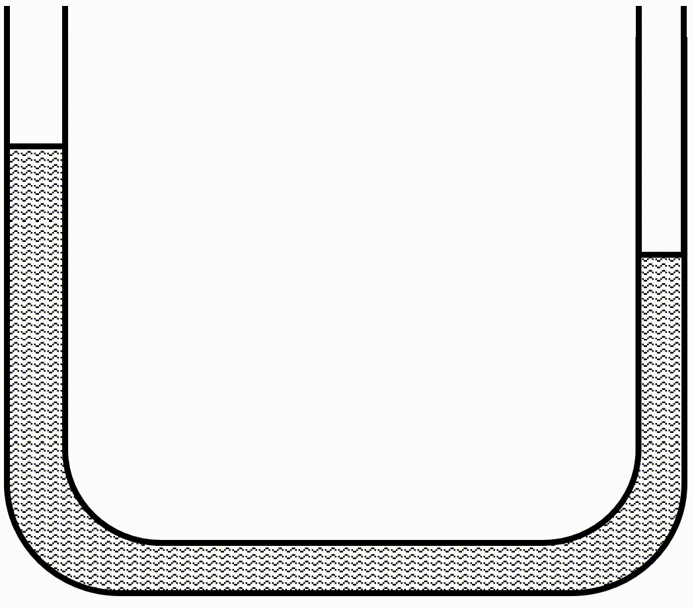
Animation: Water
oscillating in U tube.
Is every oscillatory motion always a periodic motion?
Yes
No
Simple harmonic motion
Simple Harmonic Motion (SHM) is a type of
periodic motion that is
commonly encountered in many different physical systems. It is a
particularly important concept in the study of physics, as it is the
basis for understanding many other types of oscillatory behavior, such
as sound waves and electromagnetic waves.
If a particle is placed under equilibrium at a position, net force
acting on the particle is zero at that position. Consider a situation in
which, if the particle gets displaced from this equilibrium position it
experiences a net force that moves it back to previous position.
The restoring force always tending to restore particle to its
equilibrium position is shown by arrow in following animation:
Animation: Action of
restoring force.
Such
force tending to restore the particle to equilibrium position is called
restoring force and this equilibrium position is called mean position.
If such a restoring force becomes
linearly dependent on displacement of particle, the
resulting motion of particle becomes simple harmonic motion.
What type of force do you think is the restoring force?
Constant force
Variable force
In exact words, a particle performing simple harmonic motion oscillates
in straight line in such a way that the acceleration \(\vec{a}\) is
proportional to negative of displacement vector \(\vec{x}\) from
mean position.
Thus requirement for a particle to perform simple harmonic motion is
\(\qquad\vec{a}\propto -\vec{x}\)
\(\qquad\vec{a} = -\omega^2\vec{x}\)
where \(\vec{x}\) is the displacement of the particle measured from mean
position and \(\omega\) represents a constant. The square of the term
\(\omega\) ensures that the proportionality constant remains
positive. The acceleration of particle is always along direction
opposite to direction of displacement of the particle. We can conclude
that acceleration of a particle executing simple harmonic motion is
always directed towards its mean position as shown:
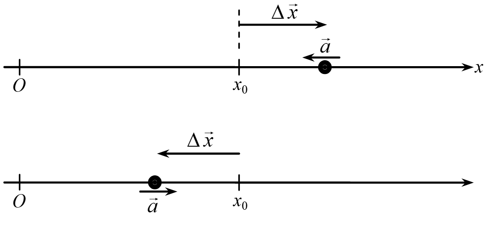
Figure: In SHM,
acceleration is always directed against displacement.
A particle in SHM is in equilibrium at its mean position. What type of
equilibrium is this equilibrium?
Stable equilibrium
Unstable equilibrium
Neutral equilibrium
If a particle performs
simple harmonic motion, its motion is usually analysed
by
measuring displacement from mean position. For a particle in SHM, the
maximum
magnitude of
displacement of the particle from mean position is called amplitude. The
time taken
to complete one cycle of the motion is called time period of the SHM.
Suppose a particle undergoes SHM of amplitude \(A\). How much is the
total distance travelled by particle in one complete time period?
\(A\)
\(2A\)
\(3A\)
\(4A\)
To have a better understanding of particles performing SHM, we must analyse few
examples of SHM. Following are few examples of SHM:
Spring block systemIf a block is kept on
smooth horizontal surface and an ideal spring
is attached to it. If the block gets displaced from its mean
position, the spring applies force on the block. The applied force is
proportional to displacement of the block and is directed opposite to the
displacement of the block. This is shown in following animation:
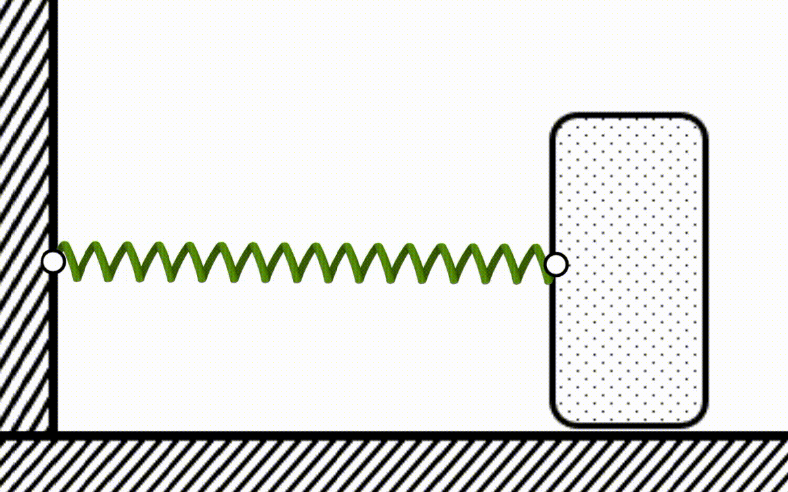
Animation: SHM of spring
block system.
In above animation, how much do you think is the co-efficient of
friction between block and the horizontal surface?
zero
non-zero
Simple pendulumIf a small particle is
attached to a string and is suspended as shown in diagram below, the system
is called a simple pendulum. If this pendulum is slightly rotated and is
released, acceleration of the bob will be due to component of its weight
towards mean position. Although the motion is not straight line motion, but
if amplitude of motion is small it can be approximated as straight line
motion and the resulting motion will become SHM. This is shown in following
animation: Animation: SHM of bob of
a simple pendulum.
Floating block in water If a small block
is floating in water, the block stays in equilibrium as the
upthrust applied by water on the block is cancelled by
weight of the block. If now the block is slightly pushed downwards and
released, the upthrust will become more than weight of the block and the
block will be accelerated upwards due to excess upthrust. If the block is
slightly pulled up and released, the upthrust will become less than weight
of the block and the block will be accelerated downwards due to excess
force. Such vertical oscillation of the block will also be SHM. Animation: SHM of block
floating in water.
Observe the above animation minutely. Is the block under SHM or water?
water
block
both
We observe that every such kind of SHM of particle has some mean position where the
particle is in equilibrium and if the particle gets displaced from mean position,
net force acts on the particle to restore the particle to its equilibrium. Such
resultant force acting on the particle which always acts towards the mean position
is called the restoring force as described previously.
SHM is also observed in waves, such as water waves, sound waves, and electromagnetic
waves. In all these cases, the particles that make up the wave oscillate back and
forth around their equilibrium positions.
SHM has many practical applications in everyday life. For example, the motion of a
car's suspension system as it drives over bumps and potholes can be modeled as
simple harmonic motion. The vibration of a guitar string and the oscillation of a
tuning fork are also examples of simple harmonic motion. SHM is also used in the
design of various mechanical and electrical systems, such as clocks, watches, and
even earthquake-resistant buildings.
In summary, simple harmonic motion is a type of periodic motion that occurs when an
object oscillates back and forth around an equilibrium position under the influence
of a restoring force that is proportional to its displacement. It is a fundamental
concept in physics and has many practical applications in daily life.
If a particle performs
simple harmonic motion, its motion satisfies following relations:
Acceleration displacement equationIf
\(\vec{a}\) represents acceleration of a particle having displacement
\(\vec{x}\) from its mean position, then
\( \qquad\vec{a}=-{{\omega
}^{2}}\vec{x}\)
The relation between acceleration of particle and its position is
plotted in following graph:
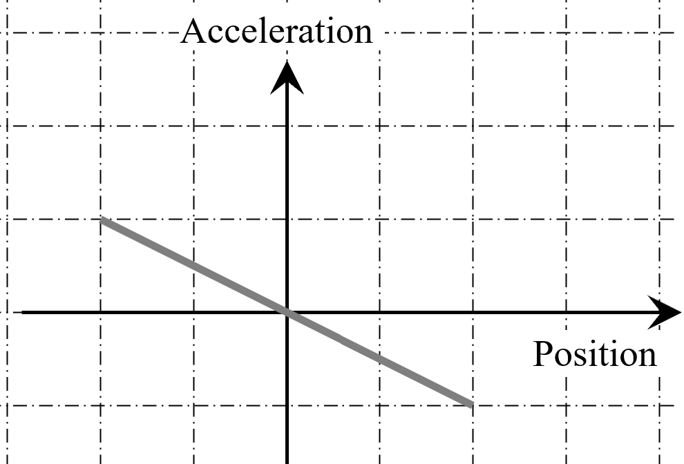
Figure: Graph of
acceleration versus position.
The slope of above graph is \(-\omega^2\).
Suppose the above graph has slope as \(-4\) in SI units. How much will
be the value of angular frequency\((\omega)\)?
\(1\)
\(2\)
\(-2\)
Displacement time equation
The previous
relation between acceleration \(\vec{a}\) and the displacement
\(\vec{x}\)
can be rewritten as:
\(\qquad\frac{d^2x}{dt^2}=-\omega^2x\)
This is
a differential equation in \(\vec{x}\). Analytically we may interpret about
\(\vec{x}\) that its double derivative with respect to time \(t\) is
directly proportional to negative of itself. The same condition is satisfied
by sinusoidal functions, which have the property that their second
derivative is proportional to the function itself. Detailed calculations
give following relation between
displacement \(\vec{x}\) and time \(t\):
\(\qquad x=A\sin\left(\omega t +
\phi\right)\)
Here \(A\) is the amplitude of SHM and the argument
\(\left(\omega t + \phi\right)\) is called the phase of SHM. The phase gives
position and direction of motion in SHM at an instant.
What is the maximum value of \(\vec{x}\) in the above equation?
\(A\)
\(2A\)
The relation between position of particle and time is
plotted in following graph:
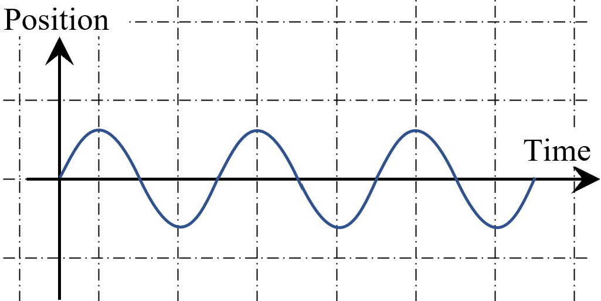
Figure: Graph of position
versus time.
Using differentiation, we can obtain equations for velocity and
acceleration
of the particle. Thus,
\(\qquad v = A\omega \cos(\omega t + \phi)\)
\(\qquad a = -A\omega^{2}\sin(\omega t + \phi)\)
The result obtained above for acceleration using double differentiation
of position has some mistake. Can you identify it?
There should be no negative symbol
Instead of \(\sin\), there should be \(\cos\)
No corrections required.
Position velocity equation
From the
relation of position and time, we can use differentiation to get
relation
between velocity and time. Thus we have:
\(\qquad x=A\sin\left(\omega t +
\phi\right)\) ...(i)
\(\Rightarrow \, \frac{dx}{dt}=A\omega\cos\left(\omega t + \phi\right)\)
\(\Rightarrow \, v=A\omega\cos\left(\omega t +
\phi\right)\) ...(ii)
From
equations (i) and (ii) we can obtain relation between position and velocity
as:
This is the relation
between velocity and position of the particle under SHM. We can observe that
for every position except at the extreme positions (where the particle
momentarily stops), there are two possible values of velocities. This is
because particle passes through every point in SHM while moving forward as
well as backwards.
For every position there are two velocities. For a given velocity (other
than the maximum velocity), how
many positions are there?
1
2
3
The relation between velocity of particle and position is
plotted in following graph:
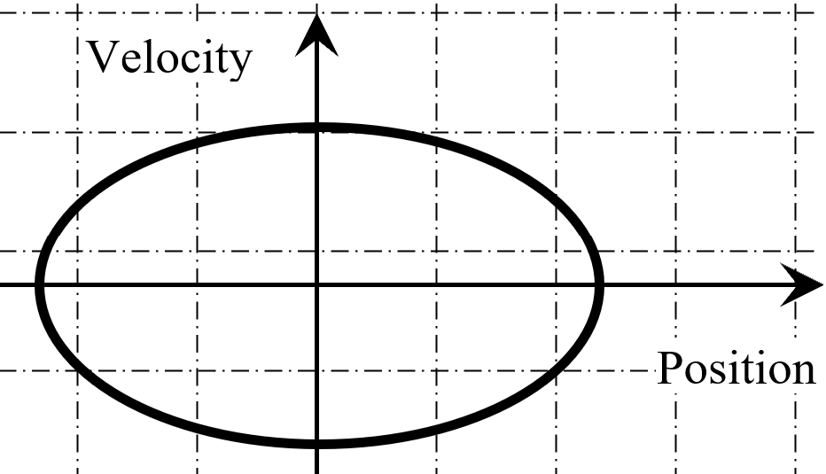
Figure: Graph of velocity
versus position.
In reference to equation below for displacement of particle in SHM:
\(\qquad x=A\sin\left(\omega t + \phi\right)\)[Consider it equation
1]
we can understand meaning of each
term in following steps:
Amplitude \((A)\) Amplitude of a
particle in its SHM is the maximum displacement of the particle from its
mean position. In the equation 1 it is represented by \(A\).
Time period \((T)\)
The time taken by
the particle to complete one full oscillation in SHM is called time
period
of SHM.
If you understood the meaning of time period, tell me: If time
period of a SHM is \(T\), what is time
taken to reach from mean position to extreme position?
\(T/2\)
\(T/4\)
Frequency \((f)\)
Frequency of any periodic motion is defined as number of cycles occurring
per unit time. If \(f\) is the frequency and \(T\) represents the time
period, then:
\(\qquad f={}^{1}/{}_{T}\)
Suppose, frequency of SHM is increase. It means that SHM will occur
:
slowly
more quickly
Phase\((\Phi)\) The phase represents the
state of motion of the particle during its SHM. In the equation 1,
the argument \(\left(\omega t + \phi\right)\) is called the phase of SHM.
The phase of SHM represents state of the particle during its motion. Using a
few basic properties of sinusoidal expression, we can understand the
relation between displacement and the phase and draw the following graph:
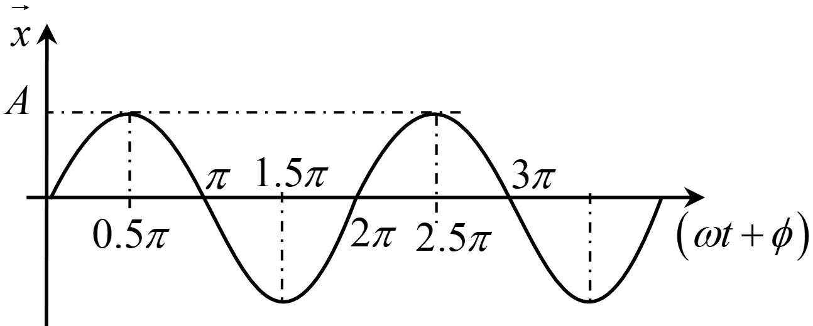
Graph: Variation of
displacement with phase. For different values of phase, state of particle is enlisted in
following table:
Phase
Motion
\(0\)
Particle is at mean position, moving towards positive
extreme.
\(\frac{\pi}{2}\)
Particle is at positive extreme position and at rest.
\(\pi\)
Particle is at mean position, moving towards negative
extreme.
\(\frac{3\pi}{2}\)
Particle is at negative extreme position and at rest.
\(2\pi\)
Particle is at mean position, moving towards positive
extreme.
The values of phase at various positions of particle under SHM is shown
in following animation:
Animation: Phase at
various positions of SHM.
It is clear from the above graph, table and animation that there occurs a
phase change of \(2\pi\) in one complete cycle of SHM. Thus, after a phase
of \(2\pi\), the motion of the particle repeats itself. In other words, the
state of motion of particle at phase \(2\pi +\theta\) is the same as that of
at
phase \(\theta\).
What is speed of particle, when phase of the SHM becomes
\(\frac{3\pi}{2}\)
zero
its maximum
If the phase of SHM is \(\frac{\pi}{2}\) , what is the state of the
particle?
Particle is at rest.
Particle is moving.
If a particle is at positive extreme during its SHM, its
acceleration is along:
positive direction.
negative direction.
Angular frequency \((\omega)\)
It represents the rate at which the phase is changing. In the above
equation, the term \(\omega\) represents the angular frequency. This is
described mathematically below:
Thus in a time \(\Delta t\), the change in phase is \(\omega(\Delta
t)\).
Since, there occurs a change of \(2\pi\) in phase of particle in one
time period (\(T\))
\(\qquad \omega (T)=2\pi\)
\(\quad\Rightarrow T=\frac{2\pi}{\omega}\)
Suppose, angular frequency of a particle performing SHM is \(2
\text{rad/s}\). What is the time taken by particle to
change its phase from \(\frac{\pi}{4}\) to \(\frac{3\pi}{4}\)?
One quarter of time period.
Half of time period.
One time period.
Initial phase\((\phi)\) When a particle
starts its SHM, the initial state of particle depends on initial phase. It
is determined by setting the value of time \(t\) as \(0\) in the equation
for phase. In the above equation \(\phi\) represents initial phase. Thus
For different values of initial phase, the particle will have different
starting position in its SHM. This is shown in following table:
Initial phase
Starting position
\(0\)
Mean position, moving towards positive extreme.
\(\frac{\pi}{2}\)
Positive extreme position.
\(\pi\)
Mean position, moving towards negative extreme.
\(\frac{3\pi}{2}\)
Negative extreme position.
Suppose initial phase of the particle is \(\frac{5\pi}{6}\), where
is the particle initially?
At mean position.
At extreme position.
Somewhere between mean and extreme.
In dynamics of SHM, we study the forces acting in SHM and their relation with time
period and frequency of SHM. For a particle to perform SHM about a mean position,
there must be a net force acting on the particle when it gets displaced from its
mean position. Such force is known as restoring force. In SHM, restoring force
causes
the particle to again reach its mean position. Hence the restoring force is always
directed towards mean position.
Consider a particle of mass \(m\) performing SHM. The force \(\vec{F}\)
depends on displacement from mean position \(\vec{x}\) as:
\(\qquad \vec{F}=-k \,\vec{x}\)[with \(k\) as a propotionality
constant]
Since this force is always directed towards the mean position, this force can be
considered as a restoring force for the system. A similar equation is followed by
any
system undergoing SHM.
Using Newton's second law for the particle,
\(\qquad m\,\vec{a}=-k \,\vec{x}\)[with \(\vec{a}\) as a
acceleration]
For any particle of mass \(m\) in SHM, if proportionality
constant of restoring force with negative of displacement from mean position is
\(k\), time period of SHM will be \(2\pi\sqrt{\frac{m}{k}}\). It can be observed
that if the
inertia of system increases, time period for motion increases while
if the restoring force
becomes strong then the time period decreases.
Since the particle in SHM is in motion, the particle has kinetic energy.
If conservative forces act on a particle undergoing SHM, potential energy is
associated with the motion. These two types of energies,
along
with their sum : mechanical energy,
are discussed in following sections:
Kinetic energy
The kinetic
energy of the particle varies as the particle changes its speed during
the
motion.
The particle has maximum kinetic energy at the mean position and zero
kinetic energy at the extreme positions. At any general position, where
particle
of
mass \(m\) has
velocity \(\vec{v}\), its kinetic energy is given as:
This result for mechanical energy shows that the mechanical energy of
systems in
simple harmonic motion under conservative forces, remains constant with
variation in position of particle or passage of time. Thus, mechanical
energy
of systems in SHM will be conserved provided only conservative forces
act
on the system.
If a particle performs uniform circular motion, projection of position vector of the
particle performs simple harmonic motion. The following animation represent circluar
motion of a particle and its projection on y-axis. The projection performs simple
harmonic motion.
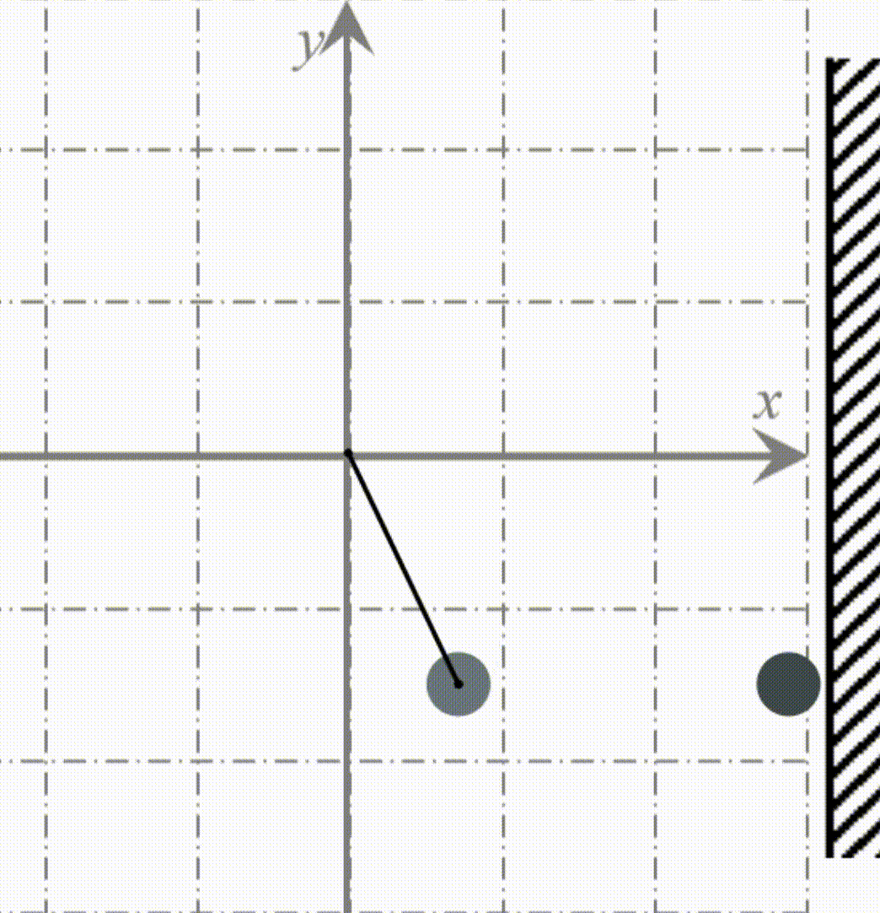
Animation: SHM as projection of
circular
motion.
For a particle performing circular motion with constant angular velocity \(\omega\)
and radius \(\vec{r}\), the amplitude of SHM of its projection will be \(r\) and the
angular frequency will be \(\omega\). If initial angular position of the
particle is \(\phi\), then angular position of the particle after time \(t\) is
\(\omega t + \phi\). This angular position of circular motion will be same as phase
of the projection performing SHM. This is shown in following diagram:
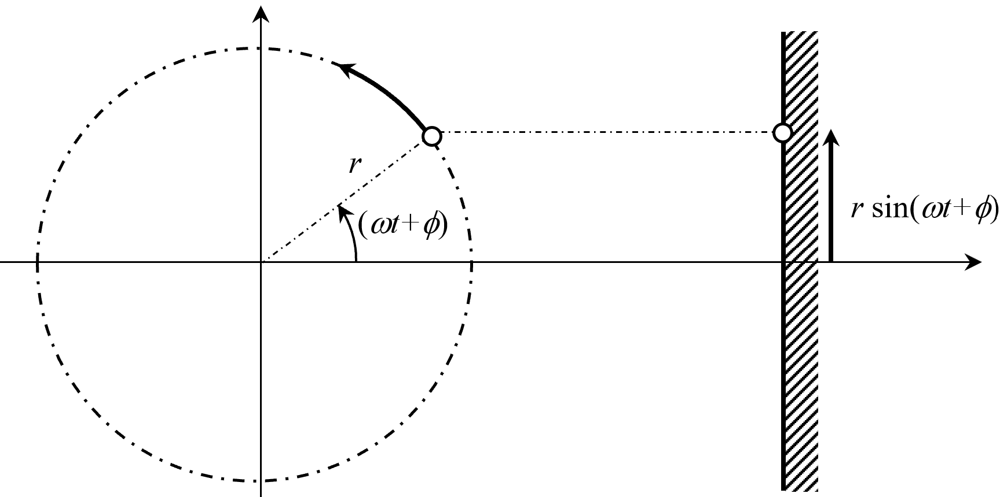
Figure: SHM as projection of circular
motion.
If only
one component of such circular motion is observed, say along y-axis, the y
co-ordinate is given as:
\(\qquad y=r \sin\left(\omega t + \phi\right)\)
This is an equation of simple harmonic motion.
Thus, a projection of uniform
circular motion represents a simple harmonic motion. The relation between the
uniform circular motion and the associated simple harmonic motion is shown in
following table:
Circular motion
SHM
Radius \(\left(r\right)\)
Amplitude \(\left(A\right)\)
Angular velocity \(\left(\omega\right)\)
Angular frequency \(\left(\omega\right)\)
Initial angle \(\left(\phi\right)\)
Initial phase \(\left(\phi\right)\)
Angular position \(\left(\theta\right)\)
Phase \(\left(\Phi\right)\)
For simplicity, we can consider the position vector of particle performing circular
motion as a rod rotating with constant angular velocity \(\omega\). The
instantaneous angular position of the rod is same as the phase of the SHM. Thus, the
rod is often termed as phasor of the SHM. Length of the phasor is equal to amplitude
of SHM while angular position of the phasor represents phase of SHM.
Two different SHM can be compared on the basis of their amplitudes, time period, mean
position or initial phase. Assuming the two SHM have common mean position, the
differences in their amplitudes, time period and initial phases are described
individually below:
Amplitude variation
If the two particles in SHM have same time period and initial phase but different
amplitude, they will have different extreme positions, but both particles will reach
their respective mean positions simultaneously. Although their mean positions
will be same but since they cover different distances in same time, their speeds at
any given time will be different. At a given time, the particle moving with higher
amplitude will have more speed. The simplified motion is shown in following
animation:
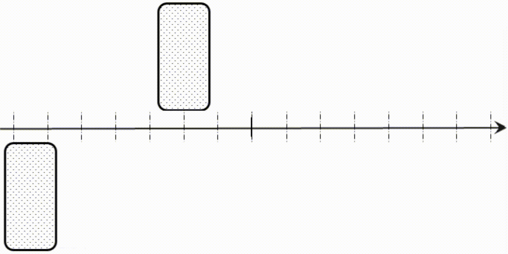
Animation: Two SHM with different
amplitudes.
Time period variation
If the two particles in SHM have same amplitude and initial phase but different
time period, although they will start from common mean position but they will reach
their respective extreme positions at different times. Since the particles cover
identical distances in different times, their speeds during motion will be
different. This is shown in following animation:
Animation: Two SHM with different
time periods.
Initial phase variation
If the two particles in SHM have same amplitude and time period but different
initial phase, their starting positions or velocity will be different. If two SHM
having same time period have difference in their initial phases equal to
\(\Delta\phi\), then the phase difference at any time during their SHM will remain
\(\Delta\phi\). This is shown by considering following SHM equations:
\(\qquad y_1=A\sin\left(\frac{2\pi}{T} t + \phi\right)\quad\) and \(\qquad
y_2=A\sin\left(\frac{2\pi}{T} t + \left(\phi+\Delta\phi\right)\right)\)
\(\qquad\)Phase difference \(=\left(\frac{2\pi}{T}t +
\phi+\Delta\phi\right)-\left(\frac{2\pi}{T} t + \phi\right)\)
Two SHM having same amplitude and time period but different initial phases are
shown in following animation:
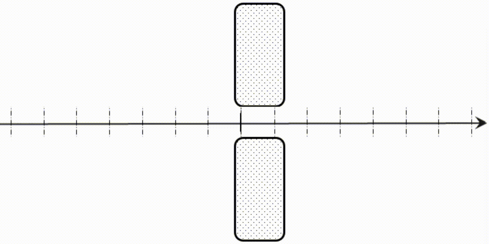
Animation: Two SHM with
\(\Delta\phi=0\).
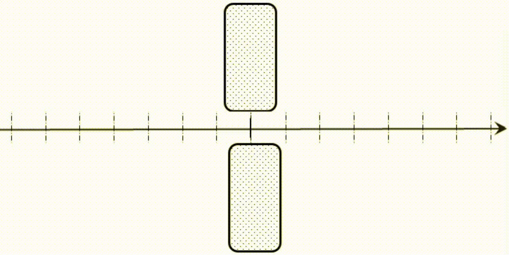
Animation: Two SHM with
\(\Delta\phi=\pi\).
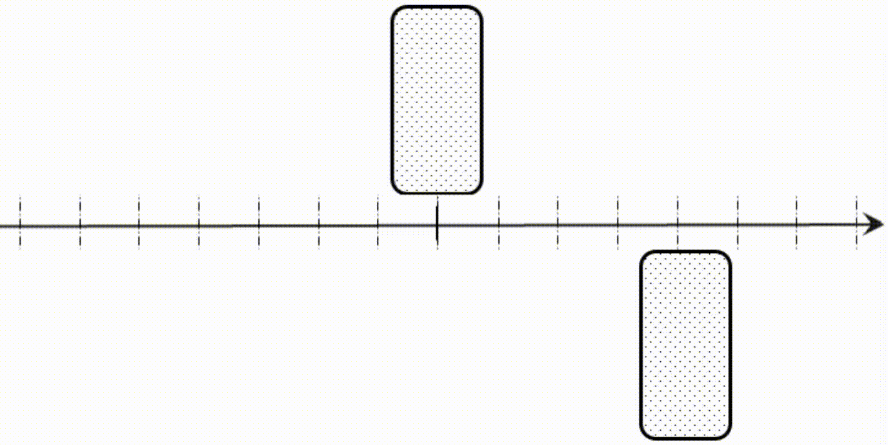
Animation: Two SHM with
\(\Delta\phi=\frac{\pi}{2}\).
The above animations represent few examples of phase differences between two
SHM.
The description of above cases of phase difference is given below:
\(\Delta\phi=0\) or same phase
At any moment of time, the state of motion of the two particles in
their respective SHM will be same. Both particles will reach their
mean position simultaneously as well as extreme positions
simultaneously.
Since one complete cycle is equivalent to a phase difference of
\(2\pi\), a phase difference of zero is equivalent of phase
difference of \(2\pi\) or any other integral multiple of \(2\pi\).
The equations of two particles in SHM with phase difference of
integral multiple of \(2\pi\) are given as:
\(\qquad y_1=A\sin\left(\frac{2\pi}{T} t + \phi\right)\quad\) and
\(\qquad y_2=A\sin\left(\frac{2\pi}{T} t + \phi+2n\pi\right)\)
Here \(n\) is any integer. From the properties of function \(\sin
x\), we can conclude that
\(y_1=y_2\), that is, both particles in SHM will have same position
at a given time.
The variations of their positions are shown in following graph:
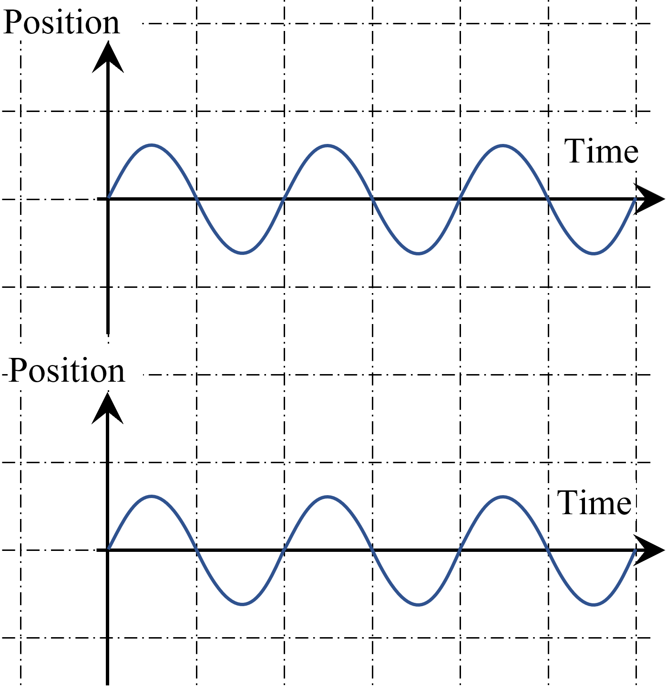
Figure: Two SHM in
same phase.
\(\Delta\phi=\pi\) or opposite phase
At any moment of time, the state of motion of the two particles in
their
respective SHM will be just opposite to each other. Both particles
will
reach mean positions simultaneously but their directions of motion
at
that instant will be opposite to each other. As first particle
reaches
positive extreme, the second particle arrives on its negative
extreme.
Both particles will reach their mean
position simultaneously as well as extreme positions simultaneously.
A phase difference of \(\pi\) is equivalent of phase difference of
\(3\pi\) or any other odd multiple of \(\pi\). The equations
of two particles in SHM with phase difference of odd multiple
of \(\pi\) are given as:
\(\qquad y_1=A\sin\left(\frac{2\pi}{T} t + \phi\right)\quad\) and
\(\qquad y_2=A\sin\left(\frac{2\pi}{T} t +
\phi+\left(2n+1\right)\pi\right)\)
Here \(n\) is any integer. From the properties of function \(\sin
x\), we can conclude that \(y_1=-y_2\), that is, both particles in
SHM will have their positions negative of each other at a given
time.
The variations of thier positions are shown in following graph:
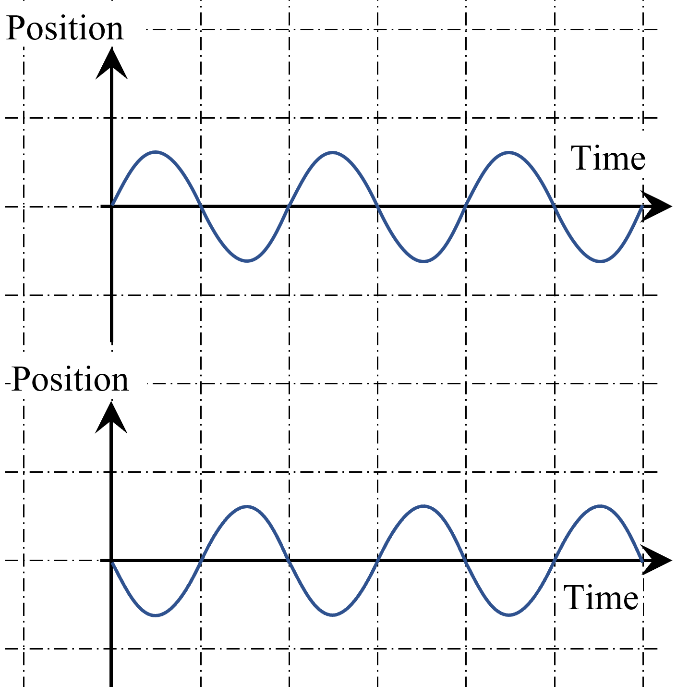
Figure: Two SHM in
opposite phase.
\(\Delta\phi=\frac{\pi}{2}\)
The equations of two particles in SHM having a phase difference of
\(\frac{\pi}{2}\) are given as:
\(\qquad y_1=A\sin\left(\frac{2\pi}{T} t + \phi\right)\quad\) and
\(\qquad y_2=A\sin\left(\frac{2\pi}{T} t +
\phi+\frac{\pi}{2}\right)\)
Using the properties of \(\sin x\), we can restate the equations as:
\(\qquad y_1=A\sin\left(\frac{2\pi}{T} t + \phi\right)\quad\) and
\(\qquad y_2=A\cos\left(\frac{2\pi}{T} t + \phi\right)\)
From properties of function \(\sin x \) and \(\cos x\), we can
conclude that when first particle reaches mean position the other
particle is at an extreme and when second particle reaches mean
position, the first particle reaches extreme.
The variations of thier positions are shown in following graph:
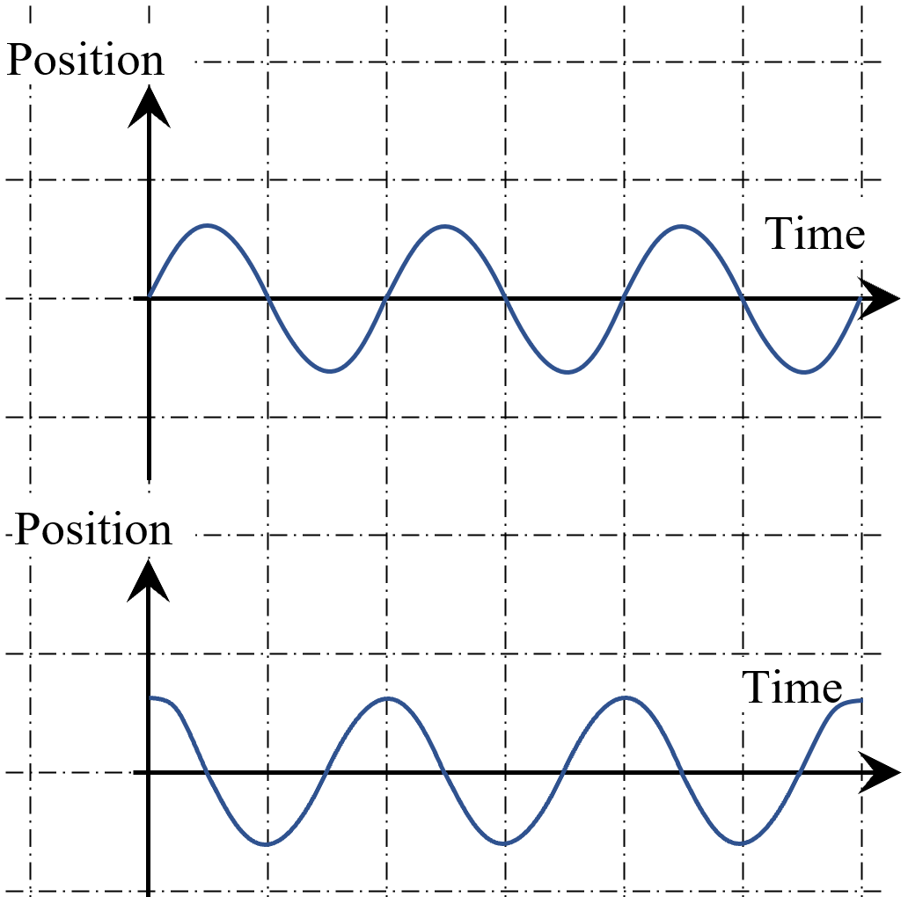
Figure: Two SHM in
with phase difference \(\frac{\pi}{2}\).
If a particle undergoes two SHM simultaneously, the total displacement of the
particle will be vector sum of individual displacements due to each SHM. If a
particle undergoes two SHM simultaneously about same mean position and same
frequency, the resulting motion is also a SHM. The amplitude of such resulting SHM
depends on phase difference between the two individual SHM.
To understand this, let us consider two different SHM of amplitudes \(A_1\) and
\(A_2\), angular frequency \(\omega\) and with a phase difference of \(\Delta\phi\).
Their equations are:
\(\qquad x_1 = A_1\sin\left(\omega t \right)\)
\(\qquad x_2 = A_2\sin\left(\omega t + \Delta\phi\right)\)
Their corresponding phasors are shown below:
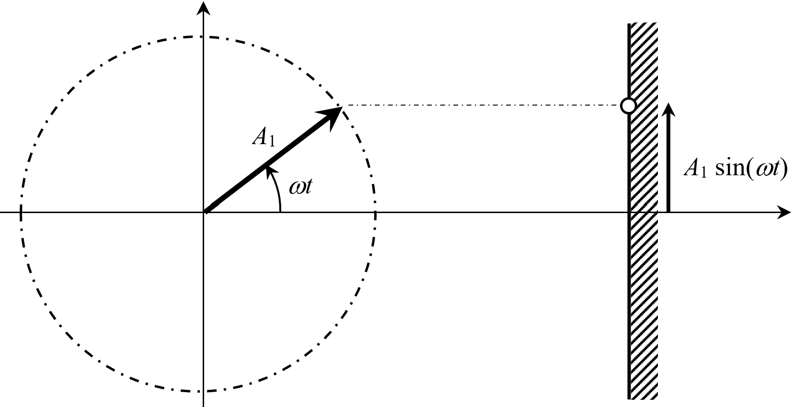
Figure: Phasor for
\(x_1\).
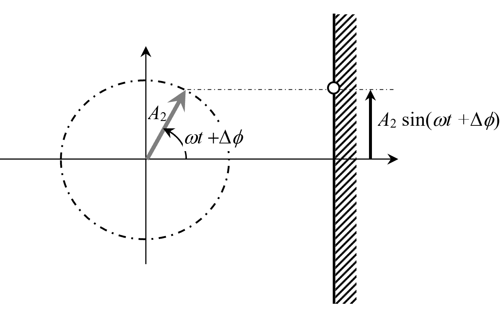
Figure: Phasor for
\(x_2\).
If the above two phasors are combined to give the resultant of the two SHM, the
two phasors are to be arranged one after the other as shown in diagram below:
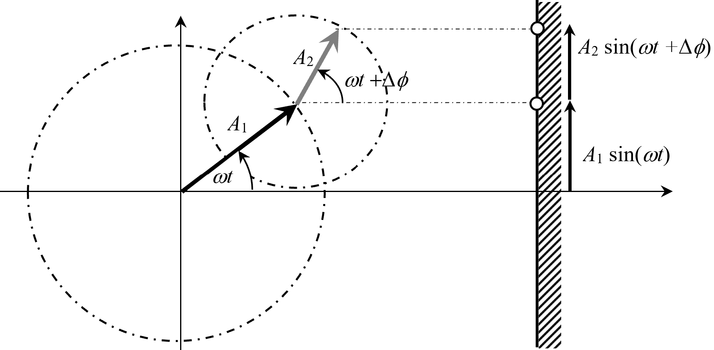
Figure: Addition of two phasors to
find resultant SHM.
From above diagram it can be understood that the phasor for the resultant SHM can be
determined by combining the two phasors using vectors as shown below:
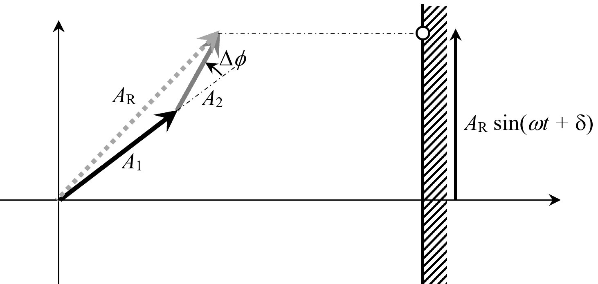
Figure: Addition of two phasors using
vectors.
From the knowledge of vectors, the resulting SHM will have an amplitude
\(A_\text{R}\) given by:
If a system is already in SHM due to a restoring force, other forces may
cause the SHM to change its mean position, frequency or amplitude. Such motion of
system, when forces other than restoring force also act on the system, is called
forced oscillation. Based on nature of extra applied forces
\(\vec{F}_\text{applied}\) on
the SHM, various effects on SHM are described below:
If \(F_\text{applied}\) is constant
Consider a SHM in which particle moves around its equilibrium position
\(P\) under the action of restoring force \(\vec{F}_\text{restoring}\).
If a
constant force \(\vec{F}_\text{applied}\) starts acting on the particle
at all
times, net force will become non-zero at point \(P\) and point \(P\)
will no longer remain an equilibrium position. The equilibrium will now
shift
to another point \(P^\prime\) where the applied force exactly cancels
the restoring force. Thus,
At \(P\) :\(\qquad \vec{F}_\text{restoring}=0\)
At \(P^\prime\) :\(\qquad
\vec{F}_\text{restoring}+\vec{F}_\text{applied}=0\)
The particle will still perform SHM but about point \(P^\prime\) with
a force \(\vec{F}_\text{restoring}+\vec{F}_\text{applied}\) as an
equivalent restoring force.
If \(F_\text{applied}\) always opposes velocity
In SHM, the total mechanical energy remains constant when all forces are
conservative. If a force opposes the particle's velocity, it performs
net negative work
during a complete cycle, causing the energy of the system to decrease.
This force is called damping force, and the phenomenon is called damped
oscillation. The restoring force still drives the particle to the
equilibrium position, but the damping force removes energy from the
system, and the amplitude of the oscillations gradually decreases until
the particle comes to rest.
The net force acting on the particle under SHM becomes
\(\vec{F}_\text{restoring}+\vec{F}_\text{damping}\)
If particle of mass \(m\) is under SHM of with restoring force of
\(-kx\), with \(x\) as
displacement of particle from mean position, equation of motion of
particle can be mentioned
as
\(\qquad m \frac{d^2x}{dt^2}=-kx\)
which has a solution of the form:
\(\qquad x=A\sin\left( \omega t +\phi\right)\)[with
sysmbols having usual meaning as earlier]
But if, in addition to restoring force \(-kx\), a damping force
proportional to
negative of velocity \(-bv\) acts on particle then equation of motion
becomes:
\(\qquad m \frac{d^2x}{dt^2}=-kx - b \frac{dx}{dt}\)
Here, \(b\) is the damping coefficient. Such differential equation has
the following solution:
\(\qquad x = A_\text{eq}\sin(\omega_\text{eq} + \phi)\)
where \(A_\text{eq}\) represents equivalent amplitude of the resulting
motion while \omega_\text{eq}
is the equivalent angular frequency. Their values are given as:
It can be observed that the equivalent amplitude of the
motion decrease exponentially with time as the particle loses energy due
to the damping force. For example, consider a mass attached to a spring.
If you push the mass and then let go, it will oscillate back and forth
due to the spring force. However, if you place the mass in a viscous
fluid, such as honey, the motion will be damped, and the amplitude and
frequency of the motion will decrease until the mass comes to rest.
Damped oscillation is a common phenomenon encountered in our daily
lives. A swing is an excellent example of a system that undergoes simple
harmonic motion when pushed by a small amount. The swing moves back and
forth in a regular manner with a constant period and amplitude. However,
air resistance acting as a damping force against the swing's motion
eventually brings it to rest. The damping force removes energy from the
system, causing the amplitude of the oscillations to decrease gradually
until the swing comes to rest.
In summary, damping force acts as an opposing force against the motion
of the system, resulting in the dissipation of energy from the system.
Consequently, the amplitude of the oscillations decreases with time, and
the system ultimately comes to rest.
If \(F_\text{applied}\) also oscillates
I am pleased that you have thoroughly reviewed the theory. I kindly request that you take a moment to share your thoughts on its usefulness. To provide feedback and rate the content you've studied, please click the following link to send me a WhatsApp message. Feel free to share any suggestions you may have to enhance the content's utility. Your input is greatly appreciated.